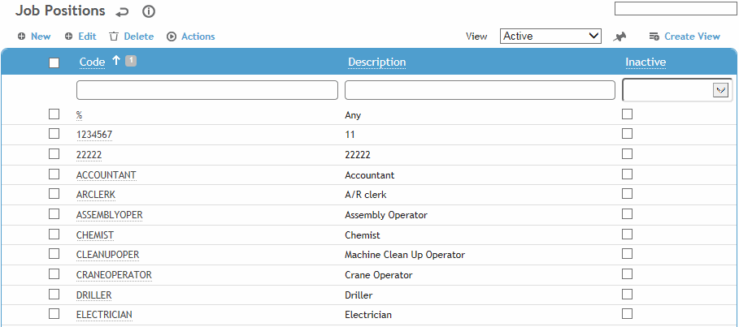
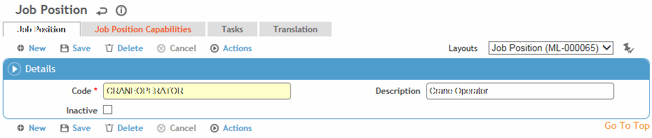

This table contains job position classifications used by the organization. You can use this table to add information about the physical capabilities employees need to perform jobs and any related tasks.
To filter the list of records, enter a few characters in one or more of the fields at the top followed by an asterisk, then press Enter.

Click a link to edit, or click New.

Enter a Code and Description for the job position.
To identify the functional capabilities of the job position, click New on the Job Position Capabilities tab. Select the capability (from the Capability table), and enter the level of capability required, start and end dates and any comments.
To associate a task with this job position, click New on the Tasks tab and select the task (from the TaskType table).
Click Save.